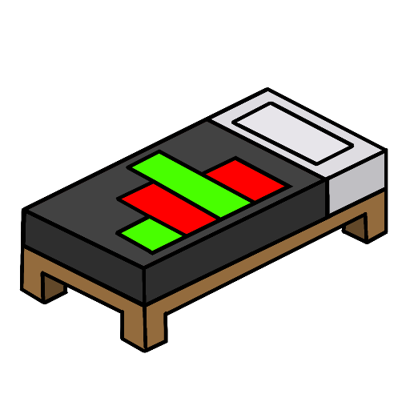
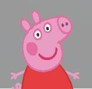
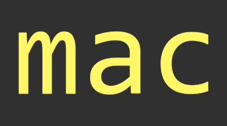
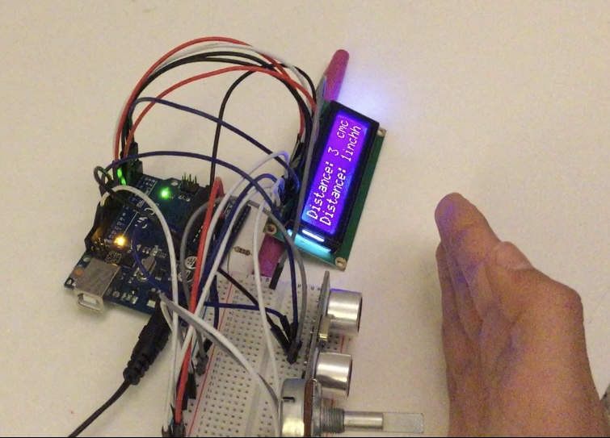

Daniel Yi
A portfolio of my favorite coding projects thus far
Youstagram
A full-stack social media app, 2023
I built an Instagram-like social media site with CRUD functionality using the MERN stack. Youstagram users can create profiles, post customized images with captions, comment on other posts, search for other users, view others' profiles, and scroll through a feed of all posts. I learned to pass data effectively through front end browsers, web servers, and databases (and the complexities that follow). Through this experience of reading docs, debugging, watching tutorials, and piecing together information to make this app, I not only honed by problem solving skills and work flow, but learned to appreciate the little things behind giant software products. Made using Javascript and Javascript libraries.


Bedwarstats.com
A stat tracker website for a popular video game, 2021
This website shows player achievment data in a popular Minecraft combat game called Bedwars. This is the first time I learned and worked with React Router and React.js in general. I learned how to use React Hooks as well as use an API key to get information from an API. Additionally, I used Netlify for deployment and also used Netlify lambda functions in order to hide my API key. This project served as a fun introduction to web development through API calls and data parsing. I also practiced CSS and UI skills through displaying player data in an organized manner. Made using Javascript and Javascript libraries.
Danny-gram
Simpler CRUD site made following a YouTube tutorial, 2021
Super Smash Bros Parody
Remake of a popular video game with new characters, 2020
mac
A minimalist video game, 2019
This game is an first-person-shooter where the objective is to navigate a set of rooms, shooting and eliminating 15 target boxes as quick as possible. I had fun making the reload animations as well as designing the game mechanics. This was one of my earliest introductions to game development and it's written in Unity's C#.
What inspired me to code?
It all started in middle school...
I was inspired by Iron Man and BattleBots to teach myself how to build small devices with Arduinos. This soon led to me picking up various programming languages, opening many doors for my academic and creative endeavors.
About Me
Hey! I'm a freshman at The Ohio State University, studying Computer Science and Engineering. I love challenging myself by taking on arduous yet intriguing projects and I've loved building things for as long as I can remember. My other hobbies include playing the guitar and soccer.